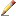

Editing Text


|
Editing Text |
|
|
Each pane of the Text Compare view is a full-featured text editor. You can enter and edit text like any other text editor, although as you do the comparison is continually updated to reflect differences between the panes. Line mode vs. character mode The Full Edit  command toggles the editor between line mode and character mode. In line mode it works similarly to Beyond Compare 2, where editing occurs on a line-by-line basis, so selection, cut, copy, paste, delete, etc. all affect entire lines. While in line mode you can edit individual lines using the Text Details area. Line mode supports disjointed selections. In character mode the main panes support editing text. Selection and editing commands all affect individual characters or spans of characters. Character mode can only have a single, continuous selection.
|